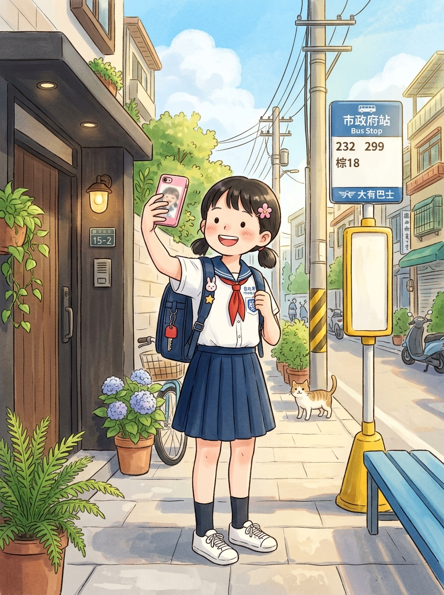

<!DOCTYPE html>
<html lang="zh-TW">
<head>
  <meta charset="UTF-8">
  <meta name="viewport" content="width=device-width, initial-scale=1.0">
  <title>資安偵探學院｜教學駕駛艙</title>
  <link rel="stylesheet" href="../../assets/cockpit.css?v=20261023b">
  <style>
    /* 本單元專用：遊戲與徽章的樣式（只影響這一頁） */
    .game { display: grid; gap: 12px; padding: 16px; background: var(--board-2); border-radius: var(--radius); border: 1px solid var(--line); }
    .game .row { display: flex; flex-wrap: wrap; gap: 8px; align-items: center; }
    .game .hint { color: var(--chalk-dim); font-size: .95rem; }
    .g-btn { min-height: var(--touch); padding: 6px 14px; border-radius: 10px; border: 1.5px solid var(--line); background: var(--board); color: var(--chalk); text-align: left; }
    .g-btn:hover { border-color: var(--title); }
    .g-btn.ok { border-color: var(--green); color: var(--green); }
    .g-btn.bad { border-color: var(--pink); color: var(--pink); }
    .g-btn:disabled { opacity: .55; cursor: default; }
    .g-out { min-height: 1.7em; }
    .g-score { font-weight: 700; color: var(--title); }
    .g-card { background: var(--board-3); border-radius: 10px; padding: 12px 14px; }
    .g-two { display: grid; grid-template-columns: minmax(0, 1fr) minmax(0, 1fr); gap: 16px; align-items: start; }
    @media (max-width: 680px) { .g-two { grid-template-columns: 1fr; } }
    .clue { background: var(--board-3); border-left: 4px solid var(--line); border-radius: 6px; padding: 8px 12px; color: var(--chalk-dim); }
    .clue.on { border-left-color: var(--pink); color: var(--chalk); }
    /* 假手機 */
    .phone { background: #fbf7ec; color: #2b2b2b; border-radius: 26px; border: 8px solid #111; max-width: 360px; width: 100%; margin: 0 auto; overflow: hidden; }
    .phone .bar { background: #3c5a78; color: #fff; padding: 8px 14px; font-weight: 700; }
    .phone .chat { padding: 12px; display: grid; gap: 10px; background: #dfe7ee; }
    .phone .msg { background: #fff; border-radius: 4px 14px 14px 14px; padding: 8px 12px; max-width: 90%; line-height: 1.55; }
    .phone .msg.me { justify-self: end; background: #c8e6a0; border-radius: 14px 4px 14px 14px; }
    .hot { background: none; border: none; padding: 0 2px; font: inherit; color: inherit; border-bottom: 2px dotted #8aa; text-align: left; }
    .hot.found { background: #ffe082; border-bottom-color: #d0342c; }
    /* Instagram 限動遊戲 */
    .insta-story { position: relative; max-width: 340px; width: 100%; margin: 0 auto; border-radius: 24px; overflow: hidden; box-shadow: 0 10px 30px rgba(0,0,0,.35); border: 4px solid #1a242f; background: #111; user-select: none; }
    .story-img { width: 100%; display: block; aspect-ratio: 3/4; object-fit: cover; }
    .story-bars { position: absolute; top: 10px; left: 10px; right: 10px; display: flex; gap: 4px; z-index: 10; }
    .bar-seg { height: 3px; flex: 1; background: rgba(255,255,255,0.4); border-radius: 2px; }
    .bar-seg.active { background: #fff; }
    .story-header { position: absolute; top: 20px; left: 12px; right: 12px; display: flex; align-items: center; justify-content: space-between; z-index: 10; }
    .story-user { display: flex; align-items: center; gap: 8px; }
    .story-avatar { width: 30px; height: 30px; border-radius: 50%; background: #ffd166; display: grid; place-items: center; font-size: 16px; border: 2px solid #fff; }
    .story-name { font-weight: 700; color: #fff; font-size: 0.92rem; text-shadow: 0 1px 4px rgba(0,0,0,0.85); }
    .story-time { color: rgba(255,255,255,0.85); font-size: 0.78rem; text-shadow: 0 1px 4px rgba(0,0,0,0.85); }
    .story-caption { position: absolute; bottom: 14px; left: 0; right: 0; text-align: center; color: #fff; font-weight: 700; font-size: 1.15rem; text-shadow: 0 2px 6px rgba(0,0,0,0.9), 0 0 12px rgba(0,0,0,0.6); z-index: 10; pointer-events: none; }
    
    /* 熱點 */
    .spot { position: absolute; cursor: pointer; z-index: 20; transition: transform .2s ease; outline: none; }
    .spot:hover { transform: scale(1.04); }
    .spot-tag { top: 58px; left: 50%; transform: translateX(-50%); background: rgba(255,255,255,0.92); color: #111; padding: 4px 12px; border-radius: 16px; font-weight: 700; font-size: 0.8rem; box-shadow: 0 2px 8px rgba(0,0,0,0.35); white-space: nowrap; }
    .spot-tag:hover { transform: translateX(-50%) scale(1.05); }
    .spot-tag.found { background: #ff3b30; color: #fff; box-shadow: 0 0 16px #ff3b30; }
    
    .spot-plate { left: 19%; top: 38%; width: 14%; height: 7%; border-radius: 8px; }
    .spot-bus { left: 74%; top: 16%; width: 18%; height: 18%; border-radius: 12px; }
    .spot-badge { left: 54%; top: 46%; width: 11%; height: 8%; border-radius: 50%; }
    
    .spot-marker { display: block; width: 100%; height: 100%; border: 2px dashed rgba(255,255,255,0.4); border-radius: inherit; }
    .spot:hover .spot-marker { border-color: #fff; background: rgba(255,255,255,0.2); }
    .spot.found .spot-marker { border: 3px solid #ff3b30; background: rgba(255, 59, 48, 0.45); box-shadow: 0 0 14px #ff3b30; animation: pulseRing 1.5s infinite; }
    @keyframes pulseRing { 0%, 100% { box-shadow: 0 0 0 0 rgba(255,59,48,0.7); } 50% { box-shadow: 0 0 0 8px rgba(255,59,48,0); } }
    /* 金字塔 */
    .pyr { display: grid; gap: 6px; justify-items: center; }
    .pyr div { background: var(--board-3); border: 2px dashed var(--line); border-radius: 8px; min-height: 44px; display: grid; place-items: center; padding: 4px 10px; text-align: center; }
    .pyr div.fill { border-style: solid; border-color: var(--title); background: #fff; }
    /* 密碼 */
    .g-input { width: 100%; font: inherit; font-size: 1.05rem; padding: 10px 12px; border-radius: 8px; border: 1px solid var(--line); background: var(--board); color: var(--chalk); }
    .meter { height: 16px; background: var(--board); border-radius: 999px; overflow: hidden; border: 1px solid var(--line); }
    .meter i { display: block; height: 100%; width: 0; transition: width .25s, background .25s; }
    .big { font-size: 1.4rem; font-weight: 700; }
    /* 站隊投票 */
    .vote { display: grid; grid-template-columns: 1fr 1fr; gap: 12px; }
    .vote .side { background: var(--board-3); border-radius: 12px; padding: 12px; display: grid; gap: 8px; justify-items: center; text-align: center; }
    .vote .num { font-size: 2.6rem; font-weight: 700; font-variant-numeric: tabular-nums; }
    /* 徽章 */
    .badges { display: grid; grid-template-columns: repeat(auto-fill, minmax(92px, 1fr)); gap: 10px; }
    .badge-i { display: grid; justify-items: center; gap: 4px; text-align: center; font-size: .85rem; color: var(--chalk-dim); text-decoration: none; }
    .badge-i span.c { width: 56px; height: 56px; border-radius: 50%; border: 3px dashed var(--line); display: grid; place-items: center; font-weight: 700; font-size: 1.2rem; }
    .badge-i.on { color: var(--chalk); }
    .badge-i.on span.c { border: 3px solid var(--title); background: var(--title); color: #fff; }
    .grad { display: none; }
    .grad.show { display: grid; gap: 8px; }
    @media (prefers-reduced-motion: reduce) { .meter i { transition: none; } }
  </style>
</head>
<body>
  <script src="../../assets/config.js?v=20261023b"></script>
  <script src="../../assets/vendor/qrcode.js?v=20261023b"></script>
  <script src="../../assets/cockpit.js?v=20261023b"></script>
  <script>
    /* ── 本單元的遊戲 ──
     * 框架的互動區給的是 640×360 畫布；這裡的遊戲需要按鈕和文字，
     * 所以 dom() 把畫布換成一般的區塊再畫遊戲（只影響本單元，不改共用的 cockpit.js）。 */
    function dom(build) {
      return function (canvas, out) {
        var box = document.createElement('div');
        box.className = 'game';
        canvas.replaceWith(box);
        build(box, out);
      };
    }
    function h(tag, cls, text) { var n = document.createElement(tag); if (cls) n.className = cls; if (text != null) n.textContent = text; return n; }
    function shuffle(a) { a = a.slice(); for (var i = a.length - 1; i > 0; i--) { var j = Math.floor(Math.random() * (i + 1)); var t = a[i]; a[i] = a[j]; a[j] = t; } return a; }

    // 選擇題式小遊戲：一題一題出現，每題幾個按鈕
    function choiceGame(intro, items, endText) {
      return dom(function (box, out) {
        box.appendChild(h('p', 'hint', intro));
        var card = h('div', 'g-card'), row = h('div', 'row'), res = h('p', 'g-out'), next = h('button', 'g-btn', '下一題');
        var idx = 0, right = 0;
        box.appendChild(card); box.appendChild(row); box.appendChild(res); box.appendChild(next);
        function show() {
          var it = items[idx];
          card.textContent = it.q;
          row.innerHTML = ''; res.textContent = ''; next.hidden = true;
          it.opts.forEach(function (o, i) {
            var b = h('button', 'g-btn', o);
            b.onclick = function () {
              var ok = i === it.a;
              if (ok) right++;
              row.querySelectorAll('button').forEach(function (x, j) { x.disabled = true; if (j === it.a) x.classList.add('ok'); });
              if (!ok) b.classList.add('bad');
              res.textContent = (ok ? '答對了！' : '再想想：') + it.why;
              next.hidden = false;
              next.textContent = idx < items.length - 1 ? '下一題' : '看結果';
            };
            row.appendChild(b);
          });
          out.textContent = '';
        }
        next.onclick = function () {
          if (idx >= items.length) { idx = 0; right = 0; return show(); }   // 再玩一次
          idx++;
          if (idx < items.length) return show();
          card.textContent = '完成！答對 ' + right + ' / ' + items.length + ' 題。' + (endText || '');
          row.innerHTML = ''; res.textContent = '';
          next.textContent = '再玩一次';
        };
        show();
      });
    }

    // 選擇冒險故事：每一步有幾個選擇，各自走到下一步或結局
    function storyGame(nodes, start) {
      return dom(function (box) {
        var text = h('div', 'g-card'), row = h('div', 'row');
        box.appendChild(text); box.appendChild(row);
        function go(id) {
          var n = nodes[id];
          text.innerHTML = n.text;
          row.innerHTML = '';
          (n.choices || [{ label: '重新開始', to: start }]).forEach(function (c) {
            var b = h('button', 'g-btn', c.label);
            b.onclick = function () { go(c.to); };
            row.appendChild(b);
          });
        }
        go(start);
      });
    }

    var GAMES = {
      // 案件 1：金字塔排排看
      dikw: dom(function (box) {
        box.appendChild(h('p', 'hint', '從最底層開始，依序點「資料 → 資訊 → 知識 → 智慧」，把金字塔蓋起來。'));
        var levels = [
          ['資料', '今天中午 32 度'],
          ['資訊', '這週每天都超過 30 度，越來越熱'],
          ['知識', '天氣熱容易中暑，要多喝水'],
          ['智慧', '體育課改到早上，還要帶水壺']
        ];
        var pyr = h('div', 'pyr'), slots = [];
        for (var i = 3; i >= 0; i--) { var s = h('div', '', '？'); s.style.width = (40 + i * 20) + '%'; slots[i] = s; pyr.appendChild(s); }
        var row = h('div', 'row'), msg = h('p', 'g-out'), step = 0;
        shuffle(levels.map(function (l, i) { return i; })).forEach(function (i) {
          var b = h('button', 'g-btn', levels[i][1]);
          b.onclick = function () {
            if (i !== step) { msg.textContent = '還不是這一層喔。先找「' + levels[step][0] + '」：還沒整理過的，或是整理過的？'; b.classList.add('bad'); setTimeout(function () { b.classList.remove('bad'); }, 600); return; }
            slots[i].textContent = levels[i][0] + '：' + levels[i][1]; slots[i].classList.add('fill');
            b.disabled = true; step++;
            msg.textContent = step === 4 ? '蓋好了！越往上越有價值，也越需要保護。' : '正確！下一層是「' + levels[step][0] + '」。';
          };
          row.appendChild(b);
        });
        box.appendChild(pyr); box.appendChild(row); box.appendChild(msg);
      }),

      // 案件 2：哪一把鎖被打開了
      cia: choiceGame('每個事件弄壞了資訊安全的哪一把鎖？', [
        { q: '哥哥偷看了你的遊戲帳號密碼。', opts: ['機密性', '完整性', '可用性'], a: 0, why: '不該看的人看到了，是機密性被破壞。' },
        { q: '有人偷偷把班級網頁上的成績改高了。', opts: ['機密性', '完整性', '可用性'], a: 1, why: '資料被亂改，是完整性被破壞。' },
        { q: '上課要用平板，結果平板中毒開不了機。', opts: ['機密性', '完整性', '可用性'], a: 2, why: '需要的時候用不到，是可用性被破壞。' },
        { q: '學校網站被駭客塞爆流量，大家都連不上。', opts: ['機密性', '完整性', '可用性'], a: 2, why: '連不上就是用不到，是可用性。' },
        { q: '同學的私訊截圖被傳到全班群組。', opts: ['機密性', '完整性', '可用性'], a: 0, why: '私密的內容被不該看的人看到，是機密性。' }
      ]),

      // 案件 3：密碼破解計時器
      password: dom(function (box) {
        box.appendChild(h('label', '', '輸入一個「範例」密碼，看電腦猜中要多久'));
        var inp = h('input', 'g-input'); inp.type = 'text'; inp.autocomplete = 'off'; inp.value = 'Abc12345!'; inp.id = 'pwDemo';
        var meter = h('div', 'meter'), bar = h('i'); meter.appendChild(bar);
        var res = h('p', 'big'), row = h('div', 'row');
        [['最常見密碼', '123456'], ['舊規則的 8 碼密碼', 'Abc12345!'], ['四個詞的密語', '小狗 喜歡 藍色 雨傘']].forEach(function (p) {
          var b = h('button', 'g-btn', p[0]); b.onclick = function () { inp.value = p[1]; upd(); }; row.appendChild(b);
        });
        box.appendChild(inp); box.appendChild(meter); box.appendChild(res); box.appendChild(row);
        box.appendChild(h('p', 'hint', '時間是粗略估計（假設每秒猜 100 億次），用來比較長短。只輸入範例，不要輸入自己真的密碼；這個工具不會傳送任何東西。'));
        var common = ['123456', 'password', '12345678', 'qwerty', '111111', 'abc123', '000000', 'iloveyou', '123456789'];
        function human(sec) {
          if (sec < 1) return '不到 1 秒';
          var u = [['秒', 60], ['分鐘', 60], ['小時', 24], ['天', 365]], v = sec;
          for (var i = 0; i < u.length; i++) { if (v < u[i][1]) return '約 ' + Math.round(v) + ' ' + u[i][0]; v /= u[i][1]; }
          if (v >= 1e8) return '超過 1 億年';
          if (v >= 1e4) return '約 ' + Math.round(v / 1e4) + ' 萬年';
          return '約 ' + Math.round(v) + ' 年';
        }
        function upd() {
          var s = inp.value, len = Array.from(s).length, sec;
          if (!len) { res.textContent = '請輸入範例密碼'; bar.style.width = '0'; return; }
          if (common.indexOf(s.toLowerCase()) > -1) sec = 0;
          else {
            var words = s.trim().split(/\s+/);
            if (words.length >= 3) sec = Math.pow(5000, words.length) / 1e10;
            else {
              var pool = 0;
              if (/[a-z]/.test(s)) pool += 26; if (/[A-Z]/.test(s)) pool += 26; if (/[0-9]/.test(s)) pool += 10;
              if (/[^\x00-\x7F]/.test(s)) pool += 3000; else if (/[^a-zA-Z0-9]/.test(s)) pool += 32;
              sec = Math.pow(pool, len) / 1e10;
              if (/^[A-Z]?[a-z]+\d+[^a-zA-Z0-9]?$/.test(s)) sec /= 1e4;   // 「字母＋數字＋符號」是常見套路，猜得更快
            }
          }
          var lg = sec < 1 ? 0 : Math.log10(sec);
          bar.style.width = Math.min(100, 4 + lg * 7) + '%';
          bar.style.background = lg < 3 ? 'var(--pink)' : lg < 8 ? 'var(--yellow)' : 'var(--green)';
          res.textContent = '電腦猜中大約要：' + human(sec);
        }
        inp.oninput = upd; upd();
      }),

      // 案件 4：詐騙訊息偵探
      scamChat: dom(function (box) {
        var clues = [
          '藉口很急又聯絡不上：「手機快沒電」讓你沒辦法打電話確認。',
          '要你買遊戲點數、傳序號：最常見的詐騙手法，點數傳出去就拿不回來。',
          '要你保密、不要告訴大人：騙子最怕你去問別人。',
          '催你「10 分鐘內」：不給你時間想清楚。'
        ];
        var score = h('p', 'g-score', '找到 0 / 4');
        box.appendChild(h('p', 'hint', '這則訊息裡藏了 4 個可疑的地方，點點看。'));
        box.appendChild(score);
        var two = h('div', 'g-two'), phone = h('div', 'phone');
        phone.innerHTML = '<div class="bar">表哥</div><div class="chat">' +
          '<div class="msg">翔翔！我在峇里島玩，<button class="hot" data-c="0">手機快沒電了</button>，幫我一個忙</div>' +
          '<div class="msg"><button class="hot" data-c="1">你先去超商買 3 張 1000 元的遊戲點數</button>，拍序號傳給我，回去馬上還你</div>' +
          '<div class="msg"><button class="hot" data-c="2">千萬不要跟你爸媽說喔</button>，不然我會被罵</div>' +
          '<div class="msg">很急！<button class="hot" data-c="3">10 分鐘內</button>要好，拜託拜託</div></div>';
        var list = h('div', ''); list.style.cssText = 'display:grid;gap:8px';
        var els = clues.map(function (c, i) { var e = h('div', 'clue', '線索 ' + (i + 1) + '：？'); list.appendChild(e); return e; });
        two.appendChild(phone); two.appendChild(list); box.appendChild(two);
        var n = 0;
        phone.querySelectorAll('.hot').forEach(function (b) {
          b.onclick = function () {
            if (b.classList.contains('found')) return;
            var i = +b.dataset.c; b.classList.add('found'); n++;
            els[i].textContent = '線索 ' + (i + 1) + '：' + clues[i]; els[i].classList.add('on');
            score.textContent = n === 4 ? '全部找到！正確做法：直接打電話給表哥本人，或撥 165。' : '找到 ' + n + ' / 4';
          };
        });
      }),

      // 案件 5：接電話判斷
      voice: choiceGame('電話或視訊來了，你會怎麼做？', [
        { q: '「媽媽」打電話來，聲音很像，說手機壞了，要你把她的 LINE 驗證碼念給她聽。', opts: ['念給她聽', '掛斷，打媽媽原本的號碼確認'], a: 1, why: '驗證碼誰來要都不能給。用原本存的號碼回撥，才知道是不是本人。' },
        { q: '視訊裡的「舅舅」臉和聲音都對，但畫面有點怪，他要你幫忙匯款。', opts: ['問我們家的通關密語', '臉是對的，照做'], a: 0, why: 'AI 可以做出假的臉和聲音。通關密語只有家人知道。' },
        { q: '陌生號碼說你中了大獎，要你先付手續費才能領。', opts: ['付手續費', '不理會，告訴家人，必要時撥 165'], a: 1, why: '「先付錢才能領獎」一定是詐騙。' },
        { q: '同學傳來一段語音，是班導的聲音說明天放假，要大家轉傳。', opts: ['馬上轉傳全班', '先跟老師或聯絡簿確認'], a: 1, why: '聲音可以用 AI 做出來，重要消息要從正式的管道確認。' }
      ], '記得回家和家人約一組通關密語！'),

      // 案件 6：聊天紅綠燈
      chatLight: choiceGame('這句話可以告訴 AI 聊天機器人嗎？', [
        { q: '幫我想作文〈我的寒假〉的開頭', opts: ['綠燈', '黃燈', '紅燈'], a: 0, why: '請 AI 幫忙想點子，沒有個資。' },
        { q: '我家住在中正路 18 號', opts: ['綠燈', '黃燈', '紅燈'], a: 2, why: '地址是個資，AI 公司可能保存你說的話。' },
        { q: '我的遊戲密碼是 abc123，幫我記住', opts: ['綠燈', '黃燈', '紅燈'], a: 2, why: '密碼不能告訴任何人，AI 也一樣。' },
        { q: '為什麼天空是藍色的？', opts: ['綠燈', '黃燈', '紅燈'], a: 0, why: '一般知識問題沒問題，但答案記得查證。' },
        { q: '（上傳一張同學的照片）幫我改成卡通', opts: ['綠燈', '黃燈', '紅燈'], a: 2, why: '這是別人的肖像，要先得到本人同意。' },
        { q: '我今天心情不好，可以跟你聊聊嗎', opts: ['綠燈', '黃燈', '紅燈'], a: 1, why: '可以聊，但真的難過時，一定要跟家人或老師說。' }
      ]),

      // 案件 7：站隊辯論計票
      debate: dom(function (box) {
        var claims = [
          '只是好玩，用 AI 把同學照片做成搞笑貼圖沒關係。',
          '只要不是我做的，在群組裡轉傳別人的搞笑貼圖沒關係。',
          '如果被改的人自己也笑了，就代表他不介意。',
          '用 AI 把明星的臉換到別人身上，只要不賣錢就可以。'
        ];
        var i = 0, a = 0, d = 0;
        var claim = h('div', 'g-card big'), vote = h('div', 'vote');
        function side(label, color) {
          var s = h('div', 'side'), num = h('div', 'num', '0'), row = h('div', 'row');
          s.appendChild(h('div', '', label)); num.style.color = color; s.appendChild(num);
          var plus = h('button', 'g-btn', '＋1'), minus = h('button', 'g-btn', '－1');
          row.appendChild(minus); row.appendChild(plus); s.appendChild(row);
          return { el: s, num: num, plus: plus, minus: minus };
        }
        var L = side('同意', 'var(--blue)'), R = side('不同意', 'var(--pink)');
        L.plus.onclick = function () { a++; draw(); }; L.minus.onclick = function () { a = Math.max(0, a - 1); draw(); };
        R.plus.onclick = function () { d++; draw(); }; R.minus.onclick = function () { d = Math.max(0, d - 1); draw(); };
        vote.appendChild(L.el); vote.appendChild(R.el);
        var row = h('div', 'row'), nx = h('button', 'g-btn', '下一個說法');
        nx.onclick = function () { i = (i + 1) % claims.length; a = d = 0; draw(); };
        row.appendChild(nx);
        function draw() { claim.textContent = '說法 ' + (i + 1) + '：' + claims[i]; L.num.textContent = a; R.num.textContent = d; }
        box.appendChild(h('p', 'hint', '老師唸出說法，學生走到教室的「同意」或「不同意」那一邊，老師在這裡記人數，再請兩邊各說一個理由。'));
        box.appendChild(claim); box.appendChild(vote); box.appendChild(row);
        draw();
      }),

      // 案件 8：限時動態找個資
      story: dom(function (box) {
        var clues = [
          '門牌號碼「15-2」：加上公車站，就知道你家在哪裡。',
          '公車站牌「市政府站」：說出你家附近的路段與搭車路線。',
          '制服名牌與校徽：說出你讀哪一所學校。',
          '打卡地點和「剛剛」：大家都知道你現在在哪裡，家裡可能沒人。'
        ];
        var score = h('p', 'g-score', '找到 0 / 4');
        box.appendChild(h('p', 'hint', '小美在放學路上發了一張自拍限動。她以為沒寫名字就很安全，你能找出 4 個洩漏個資的地方點點看嗎？'));
        box.appendChild(score);
        var two = h('div', 'g-two'), ph = h('div', 'insta-story');
        ph.innerHTML = '' +
          '<div class="story-bars"><div class="bar-seg active"></div><div class="bar-seg"></div></div>' +
          '<div class="story-header"><div class="story-user"><div class="story-avatar">👧</div><div class="story-name">小美</div><div class="story-time">剛剛</div></div></div>' +
          '<div class="spot spot-tag" data-p="3" tabindex="0" role="button" aria-label="打卡位置和時間">📍 台南市新化區・剛剛</div>' +
          '<div class="spot spot-plate" data-p="0" tabindex="0" role="button" aria-label="門牌號碼"><span class="spot-marker"></span></div>' +
          '<div class="spot spot-bus" data-p="1" tabindex="0" role="button" aria-label="公車站牌"><span class="spot-marker"></span></div>' +
          '<div class="spot spot-badge" data-p="2" tabindex="0" role="button" aria-label="制服學校名牌"><span class="spot-marker"></span></div>' +
          '<div class="story-caption">放學回家囉～🌸🎒</div>';
        var list = h('div', ''); list.style.cssText = 'display:grid;gap:8px';
        var els = clues.map(function (c, i) { var e = h('div', 'clue', '洩密 ' + (i + 1) + '：？'); list.appendChild(e); return e; });
        two.appendChild(ph); two.appendChild(list); box.appendChild(two);
        var n = 0;
        ph.querySelectorAll('.spot').forEach(function (g) {
          function hit() {
            if (g.classList.contains('found')) return;
            var i = +g.dataset.p; g.classList.add('found'); n++;
            els[i].textContent = '洩密 ' + (i + 1) + '：' + clues[i]; els[i].classList.add('on');
            score.textContent = n === 4 ? '全部找到！發文前先遮掉，回到家晚一點再發。' : '找到 ' + n + ' / 4';
          }
          g.addEventListener('click', hit);
          g.addEventListener('keydown', function (e) { if (e.key === 'Enter' || e.key === ' ') { e.preventDefault(); hit(); } });
        });
      }),

      // 案件 9：真假網址大考驗
      url: choiceGame('這個網址是真的，還是釣魚網站？看清楚每一個字。', [
        { q: 'https://165.npa.gov.tw', opts: ['真的', '假的'], a: 0, why: '這是內政部警政署 165 全民防騙網，gov.tw 結尾是政府網站。' },
        { q: 'https://165-npa.gov-tw.com/refund', opts: ['真的', '假的'], a: 1, why: '「gov-tw.com」不是 gov.tw，是故意做得很像的假網址。' },
        { q: 'https://www.roblox.com', opts: ['真的', '假的'], a: 0, why: '這是官方網址。' },
        { q: 'https://rob1ox-free-robux.com', opts: ['真的', '假的'], a: 1, why: 'l 換成了 1，還寫「免費」，是典型的釣魚網站。' },
        { q: 'https://youtube.com.free-gift.top/login', opts: ['真的', '假的'], a: 1, why: '真正的網域是最後面的「free-gift.top」，前面的 youtube.com 只是偽裝。' },
        { q: '停車場柱子上貼了一張 QR code：「掃碼繳停車費」', opts: ['直接掃', '先問大人，用官方 App 繳費'], a: 1, why: '路邊的 QR code 可能被貼上假的，掃了會連到釣魚網站。' }
      ]),

      // 案件 10：遊戲寶物陷阱（選擇冒險）
      gameStory: storyGame({
        s: { text: '你在玩遊戲，有個陌生玩家私訊你：「我是官方管理員，現在活動送 10000 寶石！點這個連結登入就能領。」', choices: [{ label: '點連結登入', to: 'a' }, { label: '不點，去官方公告查', to: 'b' }] },
        a: { text: '連結長得跟遊戲登入頁一模一樣。你輸入了帳號密碼，畫面卻卡住……隔天你的帳號被登出，寶物全部不見，還被拿去騙你的朋友。<br><b>結局：帳號被盜。</b>真正的官方不會私訊送寶物。', choices: [{ label: '如果被盜了，該怎麼辦？', to: 'r' }, { label: '重新開始', to: 's' }] },
        b: { text: '官方公告沒有這個活動。這時對方又說：「不然你先付 100 元點數，我幫你代儲，打 5 折喔！」', choices: [{ label: '好便宜，買點數給他', to: 'c' }, { label: '拒絕，檢舉並告訴大人', to: 'd' }] },
        c: { text: '你傳了點數序號，對方就消失了，還把你封鎖。<br><b>結局：錢拿不回來。</b>「代儲」、「便宜賣寶物」、「帳號買賣」都是常見的遊戲詐騙。', choices: [{ label: '重新開始', to: 's' }] },
        d: { text: '你用遊戲裡的檢舉功能檢舉對方，也告訴了爸媽，還提醒好朋友不要上當。<br><b>結局：偵探破案！</b>', choices: [{ label: '重新開始', to: 's' }] },
        r: { text: '馬上告訴家長；用其他裝置到官方網站改密碼、開雙重驗證；通知好友「我的帳號被盜，不要相信它傳的訊息」；向遊戲客服回報。', choices: [{ label: '重新開始', to: 's' }] }
      }, 's'),

      // 案件 11：群組裡的旁觀者
      bystander: storyGame({
        s: { text: '班級群組裡，有人貼了小安被 AI 改醜的照片，底下很多人回「哈哈哈」，還有人說「再轉出去」。你看到了，你會……', choices: [{ label: '也回個「哈哈」', to: 'a' }, { label: '什麼都不做，已讀', to: 'b' }, { label: '做點什麼', to: 'c' }] },
        a: { text: '笑的人越多，貼圖就傳得越快。對小安來說，每一個「哈哈」都像是一起在笑他。<br>旁觀者不是只有「沒做壞事」，按讚和轉傳也是在幫忙擴散。', choices: [{ label: '換一個做法', to: 's' }] },
        b: { text: '你沒有一起笑，但小安不知道有人站在他這邊，貼圖還在被轉傳。<br>其實你還能做一些安全又有用的事。', choices: [{ label: '我可以做什麼？', to: 'c' }] },
        c: { text: '<b>旁觀者的三個勇氣行動</b><br>1. 不轉傳、不按讚、不回「哈哈」。<br>2. 私訊小安：「我覺得那樣不好，你還好嗎？」<br>3. 截圖留證據，告訴老師或家長。<br>想一想：哪一個你今天就做得到？', choices: [{ label: '重新開始', to: 's' }] }
      }, 's')
    };

    Cockpit.renderUnit({
      title: '資安偵探學院',
      grade: '五年級資優班',
      subject: '情意發展・資訊安全與網路安全',

      objectives: [
        '說出資料、資訊、知識、智慧的差別，以及資訊安全的三要素',
        '能保護自己和別人的個資，設定安全的密碼',
        '能辨識詐騙訊息、釣魚網址、AI 假聲音與假影片',
        '用 AI 和網路時，能尊重別人、在別人被欺負時採取行動'
      ],

      intro: {
        title: '開場：歡迎來到資安偵探學院',
        slides: ['assets/cover_detective_v2.jpg', 'assets/intro_tools.jpg']
      },

      sections: [
        {
          title: '案件 1　資料變寶藏',
          text: '資料經過整理，變成資訊；資訊找出規律，變成知識；知識拿來做決定，就是智慧。越往上越有價值，也越需要保護。',
          slides: ['assets/case1_treasure_v3.jpg'],
          interactive: GAMES.dikw,
          quizzes: [
            { q: '「全班 28 人，有 20 人每天睡不到 8 小時」比較接近哪一層？', options: ['資料', '資訊', '知識', '智慧'], answer: 1, feedback: '把一個一個的數字整理、統計過，就成了有意義的資訊。' },
            { q: '下面哪一個是「智慧」？', options: ['今天下雨', '這個月下雨 12 天', '下雨天地板容易滑', '下雨天下課改在教室玩桌遊'], answer: 3, feedback: '智慧是運用知識做出好的決定。' }
          ],
          infographic: 'assets/i1_dikw.jpg',
          teacherTips: ['開場先播《賈資安偵探事務所》，請學生替自己取一個偵探代號（不用真名），寫在頁面下方的偵探證。', 'DIKW 補充：張忠謀金字塔理論新聞片段（本機影片）。']
        },
        {
          title: '案件 2　三把安全鎖',
          text: '資訊安全要守住三把鎖：<b>機密性</b>（不該看的人看不到）、<b>完整性</b>（資料沒被亂改）、<b>可用性</b>（需要時用得到）。威脅可能來自外部，也可能來自內部。',
          slides: ['assets/case2_vault_v3.jpg'],
          interactive: GAMES.cia,
          quizzes: [
            { q: '妹妹不小心把你的報告檔案刪掉了，交作業時找不到。這是哪一把鎖出問題？', options: ['機密性', '完整性', '可用性', '都沒有'], answer: 2, feedback: '需要的時候用不到，是可用性。所以重要的檔案要備份。' },
            { q: '下面哪一個是「內部」的威脅？', options: ['地震', '駭客', '電腦病毒從網路傳進來', '家人不小心刪掉檔案'], answer: 3, feedback: '來自身邊的人或自己的設備，就是內部威脅。' }
          ],
          infographic: 'assets/i2_cia.jpg',
          teacherTips: ['原簡報「科技大廠揪內賊」與「競業禁止條款」兩頁對五年級偏難，沒有放進學生頁；想延伸時可口頭補充：公司的機密被員工帶走，也是內部威脅。', '原簡報的 Avaliability 拼字已在資訊圖表中更正為 Availability。']
        },
        {
          title: '案件 3　個資保衛戰',
          text: '只要能認出「你是誰」的資料都是個資。保護個資七大妙招的前兩招已更新：<b>密碼要長、每個帳號不同，懷疑外洩才換；再加上雙重驗證</b>。',
          slides: ['assets/u_tips7.jpg', 'assets/u_tip1.jpg', 'assets/u_tip2.jpg'],
          interactive: GAMES.password,
          quizzes: [
            { q: '下面哪一個密碼最安全？', options: ['Abc12345!', '20150702', '小狗 喜歡 藍色 雨傘', 'password'], answer: 2, feedback: '四個不相關的詞串成的密語又長又好記，比塞滿符號的短密碼更難猜。' },
            { q: '網站傳來一組「驗證碼」，有人打電話說是客服，要你念給他聽。你應該？', options: ['念給他聽', '只念前三碼', '不給，告訴家長', '傳截圖給他'], answer: 2, feedback: '驗證碼是雙重驗證的第二把鑰匙，誰來要都不能給。' },
            { q: '婚紗公司把洛克的電話給了別家公司推銷。洛克說「不要再打來」之後，對方還繼續打，這樣？', options: ['合法', '違反個資法，可以檢舉', '只要是好產品就可以', '洛克要付錢才能停止'], answer: 1, feedback: '依個資法，當事人表示拒絕行銷後，就應該停止。' }
          ],
          infographic: 'assets/i3_privacy.jpg',
          teacherTips: ['舊說法「每三個月換密碼」已更新：現在的建議是用長密語、不重複使用，懷疑外洩才換，並開雙重驗證。', '提醒學生密碼破解計時器只輸入範例，不要輸入真的密碼。']
        },
        {
          title: '案件 4　可疑的連結',
          text: '朋友的帳號也可能被盜。收到奇怪的連結或要求時，<b>先停下來，用別的方法問本人</b>，必要時撥 165 反詐騙專線。',
          slides: ['assets/u_netintro.jpg', 'assets/u_net5.jpg', 'assets/u_net2.jpg'],
          interactive: GAMES.scamChat,
          quizzes: [
            { q: '私訊傳來「免費領遊戲寶物」的連結，你應該？', options: ['馬上點進去領', '轉傳給好朋友一起領', '不點，直接刪除', '回訊息問是不是真的'], answer: 2, feedback: '陌生連結可能藏病毒或是釣魚網站，不點、直接刪除最安全。' },
            { q: '同學的 LINE 帳號要你幫忙買點數、傳序號給他，最好的做法是？', options: ['他是同學，一定要幫', '打電話給同學本人確認', '叫他去找別人', '先買一張試試看'], answer: 1, feedback: '帳號可能被盜用。用電話或當面問本人，才知道是不是真的。' }
          ],
          infographic: 'assets/i4_net.jpg',
          teacherTips: ['翔翔案例的討論題保留：電腦為什麼會這樣？如果是你，會不會點表哥的連結？', '原「牛刀小試」兩題已改寫成上面的想一想（天堂遊戲郵件、即時通 → 遊戲寶物私訊、LINE 借點數）。']
        },
        {
          title: '案件 5　阿嬤接到假電話',
          text: 'AI 可以用幾秒鐘的錄音模仿家人的聲音，也能做出假的臉（深偽）。<b>很急、要錢、要保密</b>就是警訊：先掛斷，用原本的號碼回撥，問全家的通關密語。',
          slides: ['assets/a1_case.jpg', 'assets/a2_deepfake.jpg', 'assets/a3_password.jpg'],
          interactive: GAMES.voice,
          quizzes: [
            { q: '下面哪一個是 AI 假聲音詐騙常見的話術？', options: ['慢慢來，不急', '你可以先問爸媽', '很急，不要告訴別人', '我們見面再說'], answer: 2, feedback: '騙子最怕你停下來確認，所以會催你、要你保密。' },
            { q: '「通關密語」最適合選什麼？', options: ['自己的生日', '只有家人知道的事，例如狗狗的小名', '家裡的電話號碼', '貼在 IG 上的暱稱'], answer: 1, feedback: '要選網路上查不到、只有家人知道的事。' }
          ],
          infographic: 'assets/i5_deepfake.jpg',
          teacherTips: ['家庭資安任務卡：回家和家人約一組通關密語，並幫家人檢查手機有沒有開雙重驗證，家長簽名帶回。', '可接調查局 × 臺灣吧國安動畫第三集（帳號被盜、個資外洩、假訊息），本機有影片。']
        },
        {
          title: '案件 6　跟 AI 聊天的秘密',
          text: 'AI 聊天機器人是好用的<b>工具</b>，不是朋友。你說的話可能被保存，它也會一本正經地說錯。全名、學校、地址、電話、密碼、照片都不要給。',
          slides: ['assets/b1_chatbot.jpg', 'assets/b2_light.jpg'],
          interactive: GAMES.chatLight,
          quizzes: [
            { q: 'AI 回答你「台灣最高的山是阿里山」，你應該？', options: ['AI 說的一定對', '查課本或其他網站確認', '轉傳給同學', '寫進報告'], answer: 1, feedback: 'AI 會說錯（台灣最高的山是玉山），重要的資訊要查證。' },
            { q: '哪一件事可以放心請 AI 幫忙？', options: ['記住我的密碼', '幫我想科展題目的點子', '幫我把同學照片改成搞笑圖', '告訴它我家地址，請它規劃路線'], answer: 1, feedback: '想點子沒有用到個資，也不會傷害別人。' }
          ],
          infographic: 'assets/i6_chat.jpg',
          teacherTips: ['黃燈的討論：心情不好可以跟 AI 聊，但真的難過或遇到危險，一定要找家人、老師或輔導室。']
        },
        {
          title: '案件 7　搞笑貼圖風波',
          text: '每個人都有<b>肖像權</b>。用 AI 改別人的照片前，先問三個問題：本人同意了嗎？對方看到會難過嗎？傳出去收得回來嗎？',
          slides: ['assets/c1_dilemma.jpg', 'assets/c2_three.jpg'],
          interactive: GAMES.debate,
          quizzes: [
            { q: '想用 AI 把好朋友的照片做成生日卡，最好的做法是？', options: ['做好再給他驚喜', '先問他可不可以', '不用問，他是好朋友', '做好先貼到群組'], answer: 1, feedback: '就算是好朋友，用他的臉之前也要先問。' },
            { q: '為什麼說網路上的圖片「傳出去就收不回來」？', options: ['因為手機會壞掉', '因為別人可以存檔、轉傳、截圖', '因為圖片會自動刪除', '因為網路很慢'], answer: 1, feedback: '一旦被存檔和轉傳，就算你刪掉原檔，別人手上還有。' }
          ],
          infographic: 'assets/i7_photo.jpg',
          teacherTips: ['站隊辯論：教室兩邊分「同意／不同意」，學生走過去，再各請兩位說理由。允許學生聽完後換邊，並說明為什麼改變想法。']
        },
        {
          title: '案件 8　限時動態洩密',
          text: '沒寫名字也可能洩密。制服、門牌、站牌、打卡地點和時間，拼起來就能找到你。發文前先看一看，回家後晚點再發，限好友看。',
          slides: ['assets/d1_story.jpg', 'assets/d2_footprint.jpg'],
          interactive: GAMES.story,
          quizzes: [
            { q: '出去玩想發限動，哪一種最安全？', options: ['在現場馬上打卡', '回家後再發，不標地點', '拍門牌讓大家知道我住哪', '公開給所有人看'], answer: 1, feedback: '晚點發、不標地點，別人就不知道你現在在哪裡。' },
            { q: '「數位足跡」是什麼？', options: ['手機的指紋鎖', '你在網路上留下的所有痕跡', '走路的步數', '電腦的型號'], answer: 1, feedback: '發文、留言、按讚、照片，都會留在網路上，很難完全刪掉。' }
          ],
          infographic: 'assets/i8_story.jpg',
          teacherTips: ['可請學生分組找出自己平常拍照容易入鏡的個資（制服、名牌、車牌、門牌、窗外地標）。']
        },
        {
          title: '案件 9　釣魚網址與 QR code',
          text: '釣魚網站長得跟真的一模一樣，差別藏在網址裡。看網址要看<b>最後面的網域</b>；路邊貼的 QR code 也可能是假的。',
          slides: ['assets/e1_phish.jpg', 'assets/e2_qr.jpg'],
          interactive: GAMES.url,
          quizzes: [
            { q: '「https://line.me.free-sticker.top」真正的網域是？', options: ['line.me', 'free-sticker.top', 'https', 'sticker'], answer: 1, feedback: '要看最後面的網域。前面的 line.me 只是偽裝。' },
            { q: '收到簡訊「你的包裹地址有誤，請點連結更新並付運費 25 元」，你應該？', options: ['點連結付款', '回覆簡訊', '不點，請家人到官方 App 或物流網站查', '轉給朋友'], answer: 2, feedback: '假包裹簡訊是常見的釣魚手法。要查就自己打開官方 App 或網站。' }
          ],
          infographic: 'assets/i9_phish.jpg',
          teacherTips: ['真假網址遊戲裡的假網址都是虛構的示範，請勿在課堂上實際連線測試。']
        },
        {
          title: '案件 10　遊戲寶物陷阱',
          text: '免費寶物、代儲打折、帳號買賣，是學生最常遇到的遊戲詐騙。<b>官方不會私訊送寶物</b>，也不要把帳號密碼給任何人。',
          slides: ['assets/f1_game.jpg', 'assets/f2_tricks.jpg'],
          interactive: GAMES.gameStory,
          quizzes: [
            { q: '有人說可以「五折幫你代儲」，要你先付點數，這是？', options: ['好康', '常見的遊戲詐騙', '官方活動', '朋友幫忙'], answer: 1, feedback: '付了點數對方就消失，是很常見的手法。' },
            { q: '遊戲帳號被盜了，第一件事應該做什麼？', options: ['再開一個新帳號', '告訴家長，到官方網站改密碼', '在遊戲裡罵小偷', '不要讓任何人知道'], answer: 1, feedback: '先告訴家長，再用官方管道改密碼、開雙重驗證、通知好友。' }
          ],
          infographic: 'assets/i10_game.jpg',
          teacherTips: ['我是反詐騙設計師：分組設計一張給阿公阿嬤或低年級看的防詐海報，或 30 秒短劇，下次課發表。']
        },
        {
          title: '案件 11　群組裡的旁觀者',
          text: '網路霸凌時，旁觀者的選擇很重要。<b>不轉傳、不按讚</b>；私下關心被欺負的人；截圖留證據，告訴老師或家長。',
          slides: ['assets/g1_group.jpg', 'assets/g2_three.jpg'],
          interactive: GAMES.bystander,
          quizzes: [
            { q: '看到群組裡有人在取笑同學，哪一個是「勇敢又安全」的做法？', options: ['跟著回「哈哈」', '在群組裡跟大家吵架', '私訊關心被取笑的同學，並告訴老師', '把群組截圖貼到 IG'], answer: 2, feedback: '不讓事情擴大，也讓對方知道有人站在他這邊。' },
            { q: '為什麼按讚或回「哈哈」也是在幫忙霸凌？', options: ['因為會耗電', '因為會讓貼文傳得更快、更多人看到', '因為違反遊戲規則', '因為會被老師扣分'], answer: 1, feedback: '每一個回應都讓貼文更熱門，傷害也變得更大。' }
          ],
          infographic: 'assets/i11_group.jpg',
          teacherTips: ['勇氣卡：每人寫一張「如果我看到網路霸凌，我會……」，可以兩兩角色扮演練習怎麼私訊關心。', '若學生分享到真實發生的事件，課後個別關心，不在全班討論。']
        }
      ],

      summary: [
        '資料越整理越有價值，資訊安全要守住機密性、完整性、可用性三把鎖。',
        '密碼要長、不重複，再加雙重驗證；驗證碼誰來要都不能給。',
        '奇怪的連結、急著要錢或點數的訊息，先停下來，用別的方法問本人，必要時撥 165。',
        'AI 可以做出假的聲音、臉和答案：和家人約通關密語，重要的事要查證。',
        '發文前想一想會不會洩露個資；用別人的照片前先問；看到霸凌不轉傳、要行動。'
      ],

      video: { youtube: '' },

      teacher: {
        mistakes: [
          '以為「朋友的帳號傳來的就一定安全」：帳號可能被盜。',
          '以為「沒寫名字就不會洩露個資」：制服、門牌、打卡都會。',
          '以為「符號越多密碼越強」：長度比符號重要。',
          '以為「AI 說的都是對的」：AI 會說錯，要查證。',
          '以為「我只是按讚，沒有欺負人」：按讚和轉傳會讓傷害擴大。'
        ],
        links: [
          { label: '165 全民防騙網（內政部警政署）', url: 'https://165.npa.gov.tw/' },
          { label: '個人資料保護法（全國法規資料庫）', url: 'https://law.moj.gov.tw/LawClass/LawAll.aspx?pcode=I0050021' }
        ]
      }
    });

    /* ── 偵探證與徽章：答完一個案件的「想一想」就亮一枚徽章 ──
     * 只存在這台平板的瀏覽器裡（localStorage），不會傳到任何地方，也不記錄姓名。 */
    (function () {
      var KEY = 'g5-cyber-safety', state = { name: '', done: {}, pledge: '' };
      try { state = Object.assign(state, JSON.parse(localStorage.getItem(KEY) || '{}')); } catch (e) {}
      function save() { try { localStorage.setItem(KEY, JSON.stringify(state)); } catch (e) {} }

      var secs = Array.prototype.slice.call(document.querySelectorAll('section[id^="sec"]'));
      var panel = document.createElement('section');
      panel.className = 'cp-section'; panel.id = 'badges';
      panel.innerHTML = '<h2>我的偵探證</h2>' +
        '<label for="detName">偵探代號（不要寫真名）</label>' +
        '<input id="detName" class="g-input" maxlength="12" placeholder="例如：藍色閃電">' +
        '<p class="hint" style="color:var(--chalk-dim)">每個案件的「想一想」全部答完，就會亮一枚徽章。徽章只存在這台平板上。</p>' +
        '<div class="badges" id="badgeList"></div>' +
        '<div class="grad" id="grad"><h3>恭喜畢業！你是正式的資安偵探了</h3>' +
        '<label for="pledge">我的偵探宣言：在網路上，我會……</label>' +
        '<input id="pledge" class="g-input" maxlength="60" placeholder="例如：轉傳前先想一想"></div>';
      var top = document.getElementById('intro') || document.getElementById('top');
      top.parentNode.insertBefore(panel, top.nextSibling);

      var list = panel.querySelector('#badgeList');
      var items = secs.map(function (s, i) {
        var a = document.createElement('a');
        a.className = 'badge-i'; a.href = '#' + s.id;
        a.innerHTML = '<span class="c">' + (i + 1) + '</span><span>' + s.querySelector('h2').textContent.replace(/^\d+\.\s*案件 \d+\s*/, '') + '</span>';
        list.appendChild(a);
        return a;
      });
      var nameIn = panel.querySelector('#detName'), pledgeIn = panel.querySelector('#pledge');
      nameIn.value = state.name; pledgeIn.value = state.pledge;
      nameIn.oninput = function () { state.name = nameIn.value; save(); };
      pledgeIn.oninput = function () { state.pledge = pledgeIn.value; save(); };

      function refresh() {
        var all = true;
        secs.forEach(function (s, i) {
          var qs = s.querySelectorAll('.quiz'), done = qs.length && Array.prototype.every.call(qs, function (q) { return q.classList.contains('answered'); });
          if (done) state.done[s.id] = 1;
          var on = !!state.done[s.id];
          items[i].classList.toggle('on', on);
          if (!on) all = false;
        });
        panel.querySelector('#grad').classList.toggle('show', all);
        save();
      }
      document.addEventListener('click', function (e) { if (e.target.closest('.quiz .opt')) setTimeout(refresh, 0); });
      refresh();
    })();
  </script>
</body>
</html>
